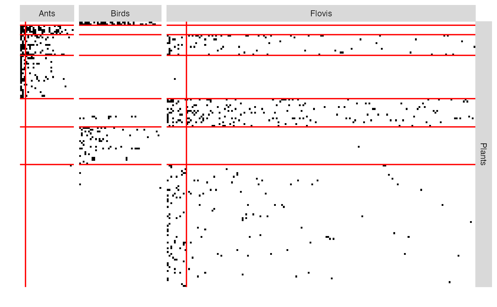

vignettes/MultiplexNetwork_principle.Rmd
MultiplexNetwork_principle.RmdThis vignette illustrates the use of the estimateMultiplexSBM function and the methods accompanying the R6 classes multiplexSBMfit.
We give here a few details on Stochastic Block Models for multiplex networks. Multiplex networks refer to a collection of networks involving the same nodes, each network corresponding to a give type of interaction. Such a network is studied in Barbillon et al. (2017) where the nodes are researchers and two networks are provided:
* a network representing the relations of advices between researchers,
* a network representing the exchanges between the laboratories the researchers belong to. In (???), the nodes are species and each network corresponds to a type of ecological relation, namely mutualism, competition and ****
See Barbillon et al. (2017) for details.
The model selection and the estimation are performed with the function estimatemultipartiteBM.
estimOptions = list(initBM = FALSE)
listSBM <- list(PlantFlovis, PlantAnt, PlantBird)
myMSBM <- estimateMultipartiteSBM(listSBM,estimOptions)contains the estimated parameters of the models we run through during the search of the better numbers of blocks.
RES_MBM contains the dataset and the results.
myMSBM
#> Fit of a Multipartite Stochastic Block Model
#> 4 parts/functional groups ( Plants Flovis Ants Birds ), 3 networks
#> =====================================================================
#> nbNodes per FG = ( 141 173 30 46 ) -- nbBlocks per FG = ( 7 2 2 1 )
#> distributions on each network: bernoulli bernoulli bernoulli
#> =====================================================================
#> * Useful fields
#> $nbNetwork, $nbNodes, $nbBlocks, $dimLabels, $architecture
#> $modelName, $blockProp, $connectParam, $memberships, $networkData
#> $probMemberships, $loglik, $ICL, $storedModels,
#> * R6 and S3 methods
#> plot, print, coef, predict, fitted, $setModel, $reorderThe best model has the following numbers of blocks
myMSBM$nbBlocks
#> Plants Flovis Ants Birds
#> 7 2 2 1To see the parameters estimated for the better model we use the following command myMSBM$connectParam or myMSBM$blockProp
myMSBM$blockProp
#> $Plants
#> [1] 0.01418720 0.03802305 0.07840873 0.16063183 0.10614897 0.13507513 0.46752510
#>
#> $Flovis
#> [1] 0.06221568 0.93778432
#>
#> $Ants
#> [1] 0.1014381 0.8985619
#>
#> $Birds
#> [1] 1
myMSBM$connectParam
#> [[1]]
#> [[1]]$mean
#> [,1] [,2]
#> [1,] 2.464664e-15 4.440892e-16
#> [2,] 1.001131e-15 4.440892e-16
#> [3,] 1.651832e-01 3.427940e-02
#> [4,] 4.173707e-03 8.566580e-08
#> [5,] 1.917898e-01 6.378749e-02
#> [6,] 8.826487e-07 3.317267e-04
#> [7,] 9.573240e-02 7.490241e-03
#>
#>
#> [[2]]
#> [[2]]$mean
#> [,1] [,2]
#> [1,] 5.366301e-15 1.107167e-15
#> [2,] 8.491907e-01 3.564830e-01
#> [3,] 6.620266e-01 1.542027e-01
#> [4,] 5.430946e-01 5.891885e-02
#> [5,] 7.172257e-16 4.440892e-16
#> [6,] 5.721732e-16 4.440892e-16
#> [7,] 4.440892e-16 5.576222e-04
#>
#>
#> [[3]]
#> [[3]]$mean
#> [,1]
#> [1,] 5.108074e-01
#> [2,] 4.440892e-16
#> [3,] 4.440892e-16
#> [4,] 4.440892e-16
#> [5,] 1.625224e-02
#> [6,] 7.534085e-02
#> [7,] 1.253527e-03The clustering supplied by the better model are in myMSBM$memberships***.
table(myMSBM$memberships$Plants)
#>
#> 1 2 3 4 5 6 7
#> 2 5 11 23 15 20 65
table(myMSBM$memberships$Ants)
#>
#> 1 2
#> 3 27
myMSBM$storedModels
#> indexModel nbParams nbBlocks Plants nbBlocks Flovis nbBlocks Ants
#> 1 1 43 7 2 2
#> 2 2 37 6 2 2
#> 3 3 31 5 2 2
#> 4 4 25 5 2 1
#> 5 5 19 5 1 1
#> 6 6 15 4 1 1
#> 7 7 11 3 1 1
#> 8 8 7 2 1 1
#> 9 9 3 1 1 1
#> nbBlocks Birds nbBlocks ICL loglik
#> 1 1 12 -2961.903 -2770.230
#> 2 1 11 -2965.539 -2800.546
#> 3 1 10 -2981.164 -2840.532
#> 4 1 9 -3017.651 -2897.765
#> 5 1 8 -3071.369 -2984.442
#> 6 1 7 -3128.286 -3057.690
#> 7 1 6 -3216.136 -3161.801
#> 8 1 5 -3358.851 -3326.480
#> 9 1 4 -3582.348 -3568.733We can either plot the reorganized matrix
plot(myMSBM) 
or the mesoscopic view
plotOptions=list(vertex.size = c(6,3,2,2))
plotOptions$vertex.shape = rep('circle',4)
plotOptions$vertex.color = c('darkolivegreen3','darkgoldenrod2','salmon2','cadetblue2')
plotOptions$edge.curved = 0.1
plot(myMSBM,type = 'meso',plotOptions=plotOptions)Will soon be ready
Barbillon, Pierre, Sophie Donnet, Emmanuel Lazega, and Avner Bar-Hen. 2017. “Stochastic block models for multiplex networks: an application to a multilevel network of researchers.” Journal of the Royal Statistical Society Series A 180 (1): 295–314. https://ideas.repec.org/a/bla/jorssa/v180y2017i1p295-314.html.